5. Neural Networks: Learning
5.1 Cost function
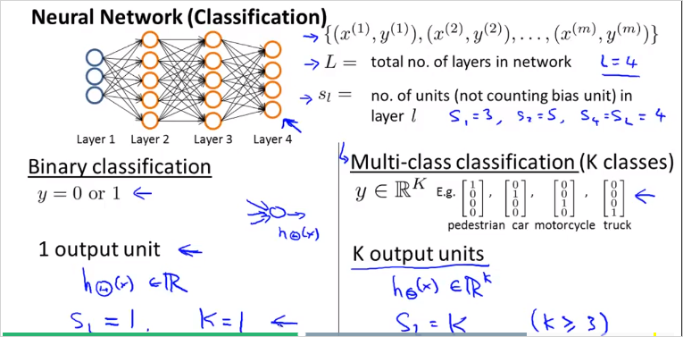
두종류의 classification 에대해서 알아볼것이다. 하나는 이진 분류, 나머지하나는 멀티 분류이다. 최종 분류되는 종류 Class갯수는 로 나타낸다. 따라서 는 차원 벡터다.
중요한점: 예측 값 y 벡터는 class갯수 K의 크기를 갖는 벡터다. 의 크기를 갖는다. 한 벡터는 위 그림처럼 최종 분류된 하나의 class만 1이고 나머지는 0으로 구성된다.
용어 정리.
= total number of layers in the network
= number of units (not counting bias unit) in layer l
= number of output units/classes
Logistic regression의 경우, cost function은 다음과 같이 정의 했었다.
Neural Network에서는 다음과같이 정의한다.
윗첨자 는 번째 output을 의미한다(). 의 는 의 번째 element 를 의미 ()
는 차원 벡터
: 는 class가 K 개 이므로 K개의 output을 모두 더함을 의미한다. 그래서 각 항에 아랫첨자 가 존재한다. 는 각 가설함수에 상응하는 k번째 실제값이다.
: 항은 Regularization 용이며, 모든 요소를 다 더한다는 의미이다. 가 각 레이어 마다 크기 만큼 있기 때문이다.
참고로 여기서 는 계산될 layer 유닛 번호, 는 현재 layer 유닛 번호이다.
- Initial parameter
우리는 시작할때 완전히 랜덤값의 weight 를 가지고 시작할것이다. gradient descent 가 반복될때마다. 올바른 값이 선택될(학습될)것이다. 그런데 먼저 gradient를 계산해야한다. 그때 필요한것이 Backpropagation Algorithm 알고리즘이다.
5.2. Backpropagation Algorithm
머신러닝은 cost function J()에 대한 미분을 계산해야한다. Backpropagation는 이 미분을 효율적으로 계산하는 방법이다. 늘 그랫듯이, parameter 를 학습하기 위해, cost function J()를 최소화해야 하는데 Backpropagation 이 그것을 위한 방법이다.
Input layer에서 출발해서 output을 구하는 forward propagation과는 반대로, BP는 output layer에서 시작한다. 즉, 마지막 결과의 'error'를 먼저 구하고, 해당 error 값을 이용해 각각의 node에서의 error 를 계산한다.(https://wikidocs.net/4262)
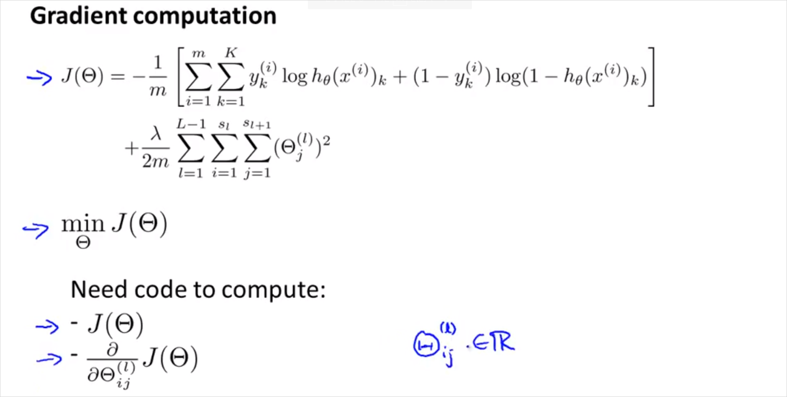
결국 계산해야할 값은 cost function J()와 J()의 미분도함수(gradient)이다.
이전에 보았듯이 Forword propagation은 아래와 같이 계산된다.
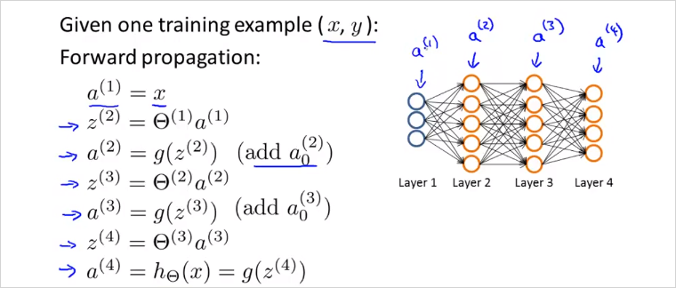
BP의 에러값 는 다음의 그림을 보면 직관적이다. 최종 결과물의 오차는 단순하다. (output - expected) 이다. 이 오차는 누적된것일 것이고, 그 오차들을 이전레이어부터 추적하는것이다. 그렇게 오차를 최소화 하는 방향으로 를 구할 수 있을것.
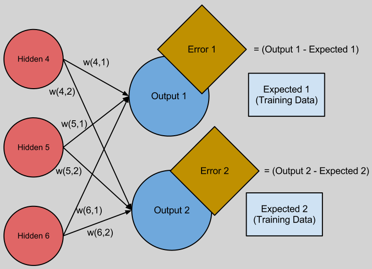
(출처 : http://andrew.gibiansky.com/blog/machine-learning/machine-learning-neural-networks/)
만약 이 매우 크다면, 매우 큰 output2 가 만들어질 것이고 이것은 매우 큰 Error2를 만든다. 이것은 BP를 할때 큰 비중이 할당될 것이다.
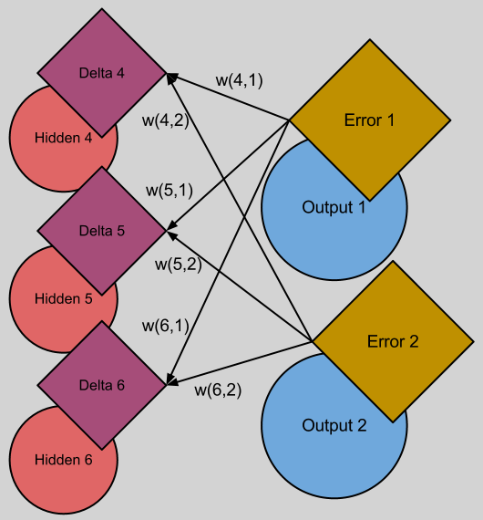
어쨋든 BP를 마치면 모든 유닛에 를 구했다면 cost fuction J()의 Gradient(미분도함수)가 나온다.
Back propagation은 다음과 같이 계산한다. 는 l 레이어에 있는 node j 에 오류가 있는지를 의미한다.
Layer가 4개인 경우, 는 단순하게 a(4) 에서 label y 를 뺀값이나, 다음 부터는 가중치()를 고려해서 계산된다.
은 미분도함수로 과 같이 계산된다. 는 계산하지 않는다.'
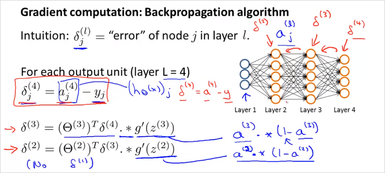
최종적으로 위의 계산을 마치면, 만약 일때, 아래와 같은 결과가 나옴을 증명할 수 있다(고 한다).
이것을 계산하는 BP 알고리즘은 아래와 같다. 이것은결국 cost function J()의 미분도함수를 계산 하는 과정이다.
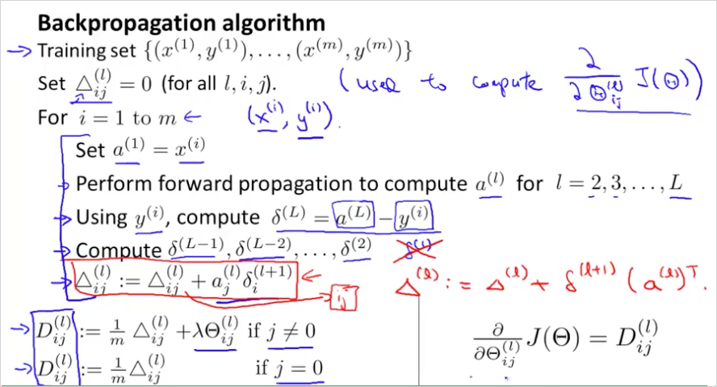
는 를 누적해서 더한것을 의미한다. (그래서 0으로 초기화해서 시작)
순서대로 살펴보면 먼저 Forward propagation 을 하여 계산을 마친다.
그 뒤에 back propagation으로 각 를 구한다.
그리고 그 두항을 곱해서 에 누적해서 더한다. (j = 0) 이 아닐때는 regularization \lambda 항이 추가됨에 유의 j = 0일때는 bias 항이기 때문에 필요없음.
그렇게 해서 나온 결과를 라고 표현할 것이다.
가 결국 cost function J() 의 미분도함수가 되는것이다.
BP 이해 추천 사이트:
https://www.youtube.com/watch?v=Ilg3gGewQ5U
http://neuralnetworksanddeeplearning.com/
http://neuralnetworksanddeeplearning.com/chap2.html
5.3. Backpropagation Intuition
Backpropagation 의 의미를 좀 더 이해해보자.
먼저 FP의 경우 은 아래와 같이 가중치를 곱한 형태로 계산됨을 이미 살펴보았다. BP또한 방향만 반대 일뿐 매우 유사하다. 를 방향만 반대로 계산 하는것이다.
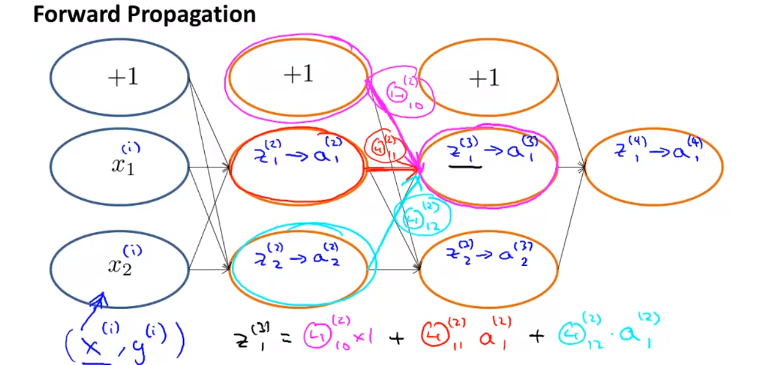
BP는 아래와 같이 반대로 계산된다. 는 layer 3을 향하는 가중치()를 곱해서 계산된다. 도 마찬가지다. bias unit은 계산되지 않음에 유의
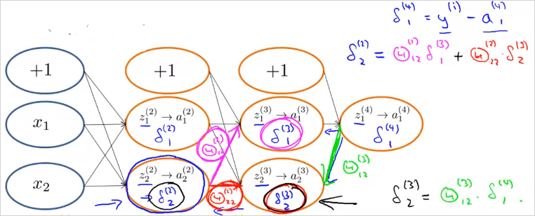
5.4. Backpropagation in Practice
Octave에서 실제로 어떻게 사용하는지 알아보자.
5.4.1. A. Implementation Note: Unrolling Parameters
결국 NN 에서는 아래의 matrix를 이용하게 된다. 는 weitght, 는 cost function J()의 미분 도계수를 의미한다.
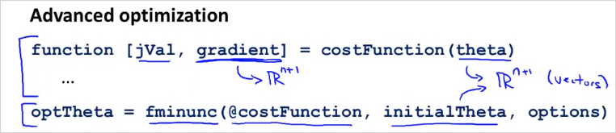
fminunc() 등을 사용해 optimizing 하기 위해서 아래와 같이 각 matrix를 하나의 벡터로 합친다(unroll)
thetaVector = [ Theta1(:); Theta2(:); Theta3(:); ]
deltaVector = [ D1(:); D2(:); D3(:) ]
각 matrix는 아래와 같은 명령으로 다시 분리할 수 있다.
Theta1 = reshape(thetaVector(1:110),10,11)
Theta2 = reshape(thetaVector(111:220),10,11)
Theta3 = reshape(thetaVector(221:231),1,11)
예를들어 3개의 레이어가 있고 각 unit의 갯수가 다음과 같다고 할때 아래와 같이 나타낼 수 있다.
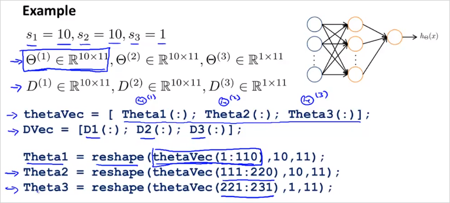
결국 이전 챕터에서 살펴 보았던 BP알고리즘을 더욱 간단히 도식화 하면 다음과 같다.
fminunc() 의 parameter인 @costFunction이 cost J()와 그의 미분계수 를 구하는 함수다.
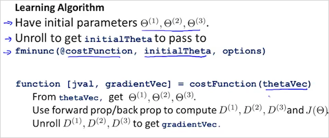
5.4.2. Gradient Checking
BP에 문제가 없는지 확인할 수있는 방법이다. 항상 사용됨.
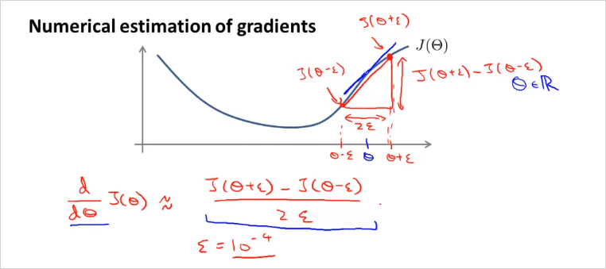
가 하나일때 2 만큼 떨어진 두 지점의 기울기를 이용하면 J() 의 미분계수를 추정할 수 있을것이다. 그리고 Octave에서 다음과 같이 implement 된다.
gradAppros = (J(theta + EPSILON) - J(theta - EPSILON)) / (2*EPSILON)
멀티 parameter인 경우로 보다 일반화하면 다음과 같다.
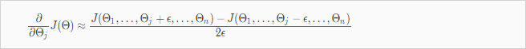
그리고 Octave에서 다음과 같이 implement 된다.
epsilon = 1e-4;
for i = 1:n,
thetaPlus = theta;
thetaPlus(i) += epsilon;
thetaMinus = theta;
thetaMinus(i) -= epsilon;
gradApprox(i) = (J(thetaPlus) - J(thetaMinus))/(2*epsilon)
end;
그리고 Gradient Checking으로 계산된 gradApprox(i)과 BP로 계산된 미분계수 벡터가 같은지 확인하면 되는것이다.
gradApprox(i) = DVec
따라서 Gradient Checking을 사용하는 방법을 정리하면 다음과 같다.
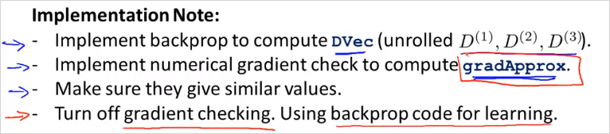
다시 Training하기 전에 Gradient Checking을 끄지 않으면 엄청 느려질 수 있음에 주의해야한다.
Once you have verified once that your backpropagation algorithm is correct, you don`t need to compute gradApprox again. The code to compute gradApprox can be very slow.
5.4.3. Random Initialization
기존처럼 의 초기값을 0으로 정하는것은 NN에서 동작하지 않는다. 그이유는 잘 이해하지 못했음. 따라서 다음과 같이 의 초기값을 구한다. 결과적으로 의 범위는 ~ 이 될 것이다.
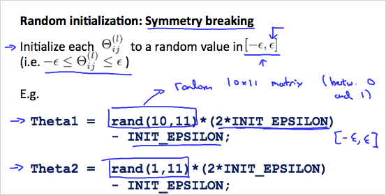
Octave로 implement 하면:
If the dimensions of Theta1 is 10x11, Theta2 is 10x11 and Theta3 is 1x11.
Theta1 = rand(10,11) * (2 * INIT_EPSILON) - INIT_EPSILON;
Theta2 = rand(10,11) * (2 * INIT_EPSILON) - INIT_EPSILON;
Theta3 = rand(1,11) * (2 * INIT_EPSILON) - INIT_EPSILON;
rand(x,y) is just a function in octave that will initialize a matrix of random real numbers between 0 and 1.
5.4.4. Putting it Together
지금까지 NN에서 다룬 내용을 모두 종합해보자.
첫번째로 적절한 Network architecture를 선택한다. 그것은 다음을 선택하는것이다.
- Input Unit 갯수
- Output Unit 갯수
- layer 당 hidden unit 갯수 (많을수록 성능 향상, 연산 cost 증가)
Training a Neural Network
- Randomly initialize the weights
- Implement forward propagation to get
- Implement the cost function
Implement backpropagation to compute partial derivatives
4번까지 정리하면 이런 모양
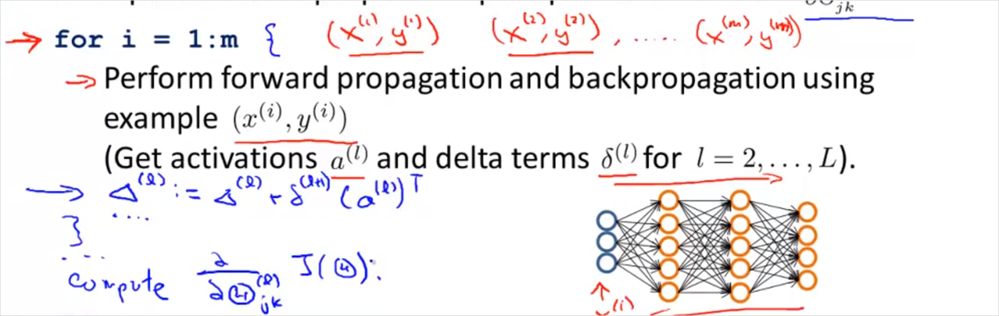Use gradient checking to confirm that your backpropagation works. Then disable gradient checking.
- Use gradient descent or a built-in optimization function to minimize the cost function with the weights in theta.
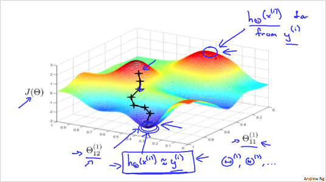
최고점은 가 실제 값 와 가장 차이가 큰 것이고, 최저점은 가 실제 값 에 가장 가깝다는 뜻이다.
gradient descent는 기울기를 하강하는 것이고, BP는 기울기를 하강할때 방향을 설정하는것과 같다.